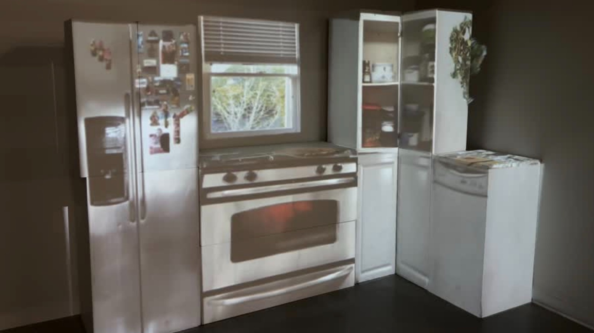
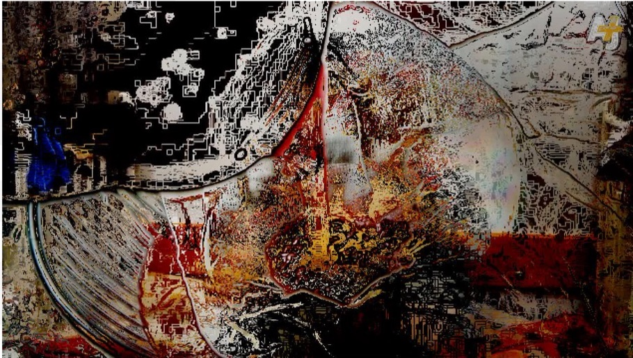
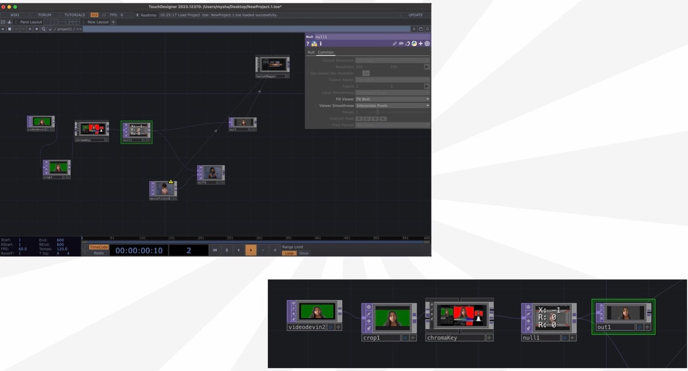
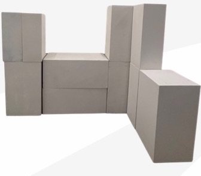
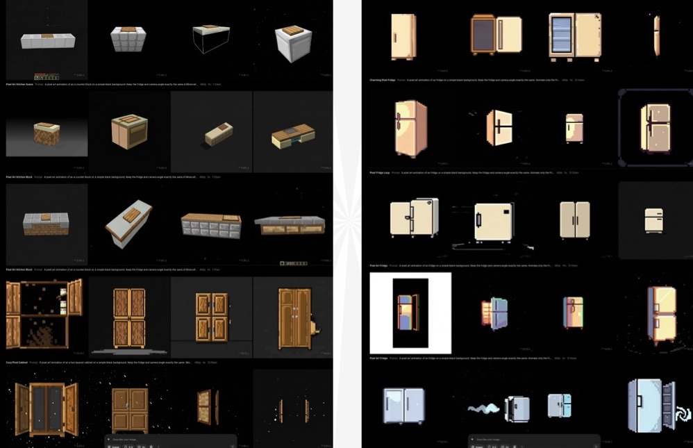
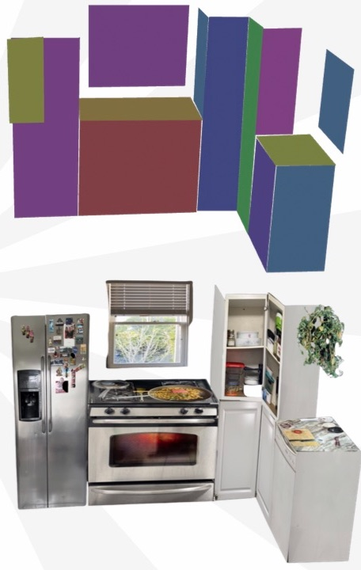
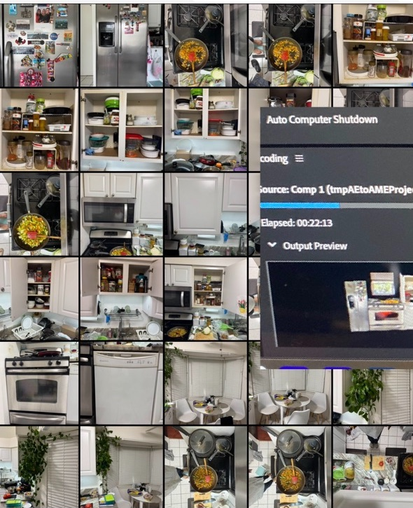

Rebuilding My Mother’s Kitchen
A projection-mapped installation that rebuilds my mother’s kitchen out of plain white blocks, then brings it back to life with light: the fridge covered in magnets, the stove, the window, the open cabinet.

Artist statement
This piece holds the place my mother says she “belongs.” She’s a housewife, a word that carries pride and ache. I reconstruct her space to show both truths, labor and love. In these objects, I read her identity, not as destiny, but as a record of what she’s given.
- Medium
- Projection onto constructed blocks
- Themes
- Identity & belonging, mobility & memory
- Also
- Bengali identity, care as infrastructure
- Tools
- TouchDesigner, Sora, After Effects
01 · Where it began
Starting somewhere else
My first concept was a political piece about the genocide in Palestine. As I developed it, I kept questioning the tone and my own positionality, whether it was my story to tell in this form. That questioning pushed me toward something closer to home.

02 · Interactivity
The body as a mirror
I was drawn to immersive projection spaces where visitors walk inside the image. I started experimenting in TouchDesigner, building node networks that key and layer live video so the projection could respond to whoever stood in front of it.

03 · Form
A Minecraft kitchen
“Seeing those blocky platforms triggered ‘Minecraft’: modular, projectable surfaces.”
Plain stacked blocks became the structure: simple enough to build, with flat faces that take projection well, and a shape anyone recognizes as a kitchen once the light hits it.

04 · Motion
Animating with Sora
I used Sora to generate small looping animations, like a pixel-art fridge door slowly opening and closing, writing prompts that locked the camera and proportions so each loop would fit its block exactly.

05 · Final ideation
My mother’s kitchen
The final idea was my mother’s kitchen: ordinary and sacred. It holds labor, culture and love. It’s the support system that raised us. I photographed her real kitchen, mapped each surface onto the block model, and rendered the projection, fixing choppy animations along the way.

